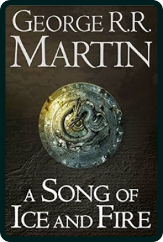
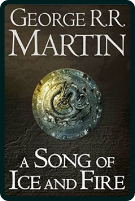

The imaginary continent of Westeros was once inhabited by a
magical people, the Children of the Forest. For centuries, other
people came across the Narrow Sea from the eastern continent of
Essos: up North, the First Men; in the Center, the Andals; down
South, the Dornish. With time, the Children of the Forest were
relegated to the world of legends, and the different ethnicities
divided the continent into seven major kingdoms. Now, in this
South of Essos, there was an ancient and powerful civilization
called Valyria that ruled through magic and dragons. The
Valyrians also came to Westeros and established three clans: the
Velaryon, the Celtigar, and the powerful dragon-riders, the
Targaryens. One such Targaryen, Aegon the Conqueror, united the
Seven Kingdoms of Westeros under his rule, and the Targaryens
controlled Westeros for centuries, even after their homeland of
Valyria was destroyed in a mysterious holocaust.
The Targaryen rule was an unstable balance between their pagan
Valyrian rituals, which were based on incest to keep their blood
line pure because it was their Valyrian blood that allowed them
control of the dragons, and Westeros' various religions and
uses, including the Andal religion of the Seven Gods. Many wars
were fought until King Jaeherys established peace and balance in
Westeros. Unfortunately, a war among the Targaryen family,
called "The Dance of the Dragons," destroyed most of the
Targaryens and their dragons. For generations, the Targaryen
power dwindled until their last king, Aerys III, the "Mad King,"
was haunted by delusions and hallucinations and abused his
power, insulting many of the Seven Kingdoms' major families. War
ensued. After kidnapping a young lady from the Stark clan
(rulers of the North and descendants of the First Men) and
murdering her father and brother who sought justice, her younger
brother Ned Stark allied with her betrothed Robert Baratheon,
Lord of Storm's End, and an Andal, and the Targaryens were
deposed of the throne and killed, in battle or massacre, except
for two young babies who were promptly evacuated to Essos.
Several years later, this show begins. A three-man team surveils
the frozen north to find an ancient menace returning, but the
remaining survivor, a simple fool, is thought to be crazy and is
beheaded for desertion by a much older Ned Stark. At the same
time, his village is visited by the king, Robert Baratheon, now
an old and fat man, married to a lady from the Lannister clan
(and former allies of the Targaryens before they betrayed them
when they realized Baratheon was winning the war). The
right-hand man of the King, aptly named "Hand of the King," died
in mysterious circumstances, and Robert names Ned Stark his
successor to find out what happened. During his stay in the
capital, King's Landing, Ned Stark finds that the former Hand of
the King discovered a major conspiracy by the queen, Cersei
Lannister, and that her sons and heirs to the throne were
bastards. But the King dies in a "hunting accident," and the
Queen gives the throne to her son. Trying to denounce the coup,
Ned Stark is arrested and beheaded by his own sword. His men are
all killed, and only her two daughters survivethe naive Sansa,
betrothed to the new king, and Arya, who managed to escape. His
elder son, Robb Stark, is named King in the North and rides down
on King's Landing to avenge his father.
Other contestants claim the crown too, starting a war that
ravages the Seven Kingdoms and takes up most of the first three
seasons. Robb Stark is killed by treason, and the Lannisters
consider the war won. But then the young king Joffrey is
poisoned, and all blame falls on the uncle, a very smart dwarf
that the queen hates because she blames him for killing their
mother during labor. The dwarf, Tyrion Lannister, escapes, but
his adventures make up part of most of the remaining seasons.
Queen Cersei replaces Joffrey with another son, but then King's
Landing is taken over by a powerful religious movement that
denounces her as incestuous and shames her in front of everybody
in King's Landing. Cersei eventually kills everyone in
vengeance, including the betrothed new queen. And his last son
commits suicide as a result of his grief. Cersei is now the sole
ruler of Westeros. Or should be, because the two Targaryenm
babies, now young adults, have been plotting to reclaim their
throne in Essos since the first episode.
Viserys, a madly ambitious young man, ends up being killed, but
his sister, Daennerys, marries a powerful warlord and receives
three dragon eggs as a wedding gift. Thought to be barren eggs
that have turned into stone, Daennerys manages to hatch them,
and her adventures begin at the end of the first season.
Expelled from the tribe after her husband's death, she crosses
the desert, facing all sorts of dangers and enemies, until she
manages to reach a slave city, where she sells her dragons to
buy an army of thousands of slaves, then turns her dragons on
the slave-owners. Thus begins her story as "Breaker of Chains."
After invading and destroying all slaver cities and freeing
millions of people, she manages to reconquer her old tribe and
crosses the Narrow Sea to invade Westeros.
However, up North... Jon Snow, Ned Stark's bastard, joins the
Night's Watch, a militia of "forced volunteers" who guard a
large, magical wall of ice that separates the Lands of Always
Winter, up north, and the rest of Westeros. He discovers the
ancient peril the simple fool warned about in the first episode
is all too real. He rises to commander of the Night's Watch and
unites his men with the lost tribes of Wildlings, free men that
roam the northern lands above the Wall, free of the laws of the
Seven Kingdoms. He saves them all from an attack by "wights,"
zombie-like dead people reanimated by the mysterious White
Walkers, people who appear to be made of ice and are led by the
Night King. But the Night's Watch does not like his decisions,
so they kill him. And here the books end their story. But the
show goes on. Using magic, a mysterious sorcerer called
Melisandre, who worships the Lord of Light and fights the Night
King, reanimates Jon Snow. Thus begins the story of Jon Snow,
future king of the North.
In the remaining episodes, Jon Snow manages to take back the
castle of Winterfell, which belonged to the Starks, and reunites
with a much less naive Sansa Stark, who becomes an intelligent
ruler, and a cruel Arya Stark, who becomes an assassin. They
also reunite with the much younger Bran Stark, who had acquired
magical powers that allowed him to see the past. Together, they
manage to ally with Daenerys Targaryen in their fight against
the Lannisters, but also against the army of the dead, led by
the Night King. His army attacks Winterfell to kill Bran Stark,
for he's the only one with powers to stop the Night King.
The battle is overwhelmingand the Night King has one of
Daenerys's dragons, which he killed and reanimated as an ice
dragon! In the last minute, when the Night King is about to kill
a defenseless Bran Stark, Arya shows her prowess as an assassin
and stabs the Night King with a very famous Valyrian blade.
After defeating the Night King, the combined armies of Jon
Snow's Northernmen and Daenerys's savage riders attack King's
Landing and defeat the Lannisters. But Daenerys shows she's
really the "Mad King's" daughter by destroying King's Landing
even after the surrender of the city, and she vows on the total
submission of the entire Seven Kingdoms like her ancestors
didthereby endangering the freedom of the Northern men. Jon
Snow, who grew up to be her lover, makes a final sacrifice by
killing her to ensure lasting peace in Westeros.
 


 John Arryn
John Arryn
 Lysa Arryn
Lysa Arryn
 Robin Arryn
Robin Arryn